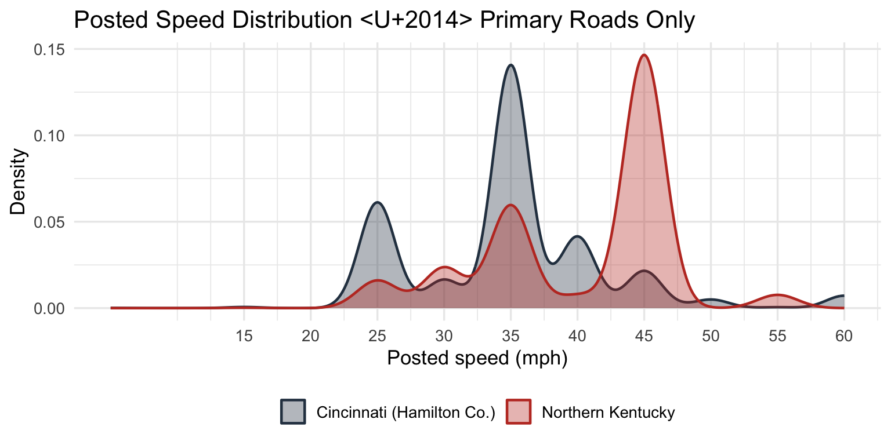

Road Design Fragmentation: Northern Kentucky vs. Cincinnati
Does municipal fragmentation produce worse pedestrian environments?
Published
July 5, 2026
Motivation
Cincinnati and Northern Kentucky share a metro economy separated by the Ohio River — and by a sharp political boundary. Cincinnati operates under a single city engineering department with a Complete Streets ordinance adopted in 2024. Northern Kentucky’s urban core is governed by dozens of independent municipalities — Covington, Newport, Florence, Erlanger, Fort Mitchell, Fort Wright, and others — each setting its own road design standards, signal timing, and right-of-way rules.
The transit fragmentation literature documents how governance patchworks depress ridership. The hypothesis here is the same mechanism on road design: fragmented jurisdiction → inconsistent standards → pedestrian-hostile outcomes.
Data Sources
Three road inventory sources are combined, with official DOT data taking priority over OSM:
Source
Region
Coverage
Key fields
ODOT Road Inventory (TIMS)
Cincinnati / Hamilton Co.
23,342 segments
Speed, lanes, lane width, bike lane, ADT, shoulder
KYTC Speed Limits (ArcGIS REST)
NKy — state + city streets
400 segments
Posted speed
KYTC LRS Shapefile
NKy — state roads only
747 segments
Lanes, lane width
OpenStreetMap
Both
49k segments
Highway type, speed, lanes, sidewalk, surface
OSM fills gaps where DOT data is absent; highway-type defaults fill any remaining nulls. All sources are spatially joined within 50 m of each OSM centroid.
Pedestrian Hostility Index
Each segment is scored 0–1 on each available dimension, then combined as a weighted mean over non-null components. Higher = more hostile to pedestrians.
The asymmetry is stark: ODOT matches 89% of Cincinnati segments with official speed data; KYTC’s state-road shapefile only reaches 3.7% of NKy. NKy’s city and county roads — which carry most of the pedestrian activity — have no centralized official inventory available, only OSM. This is itself a governance finding: Cincinnati has an institutionally mapped road network; NKy doesn’t.
Primary roads are the clearest signal. NKy primaries average 40.3 mph and score 0.592 hostility; Cincinnati primaries average 34.9 mph and score 0.534. This gap reflects design intent: NKy primary arterials (US routes through Florence, Erlanger, and Fort Mitchell / Fort Wright) function as high-speed through-routes while also serving local access, with no coordinating authority to enforce lower design speeds. Cincinnati’s primary network operates under city engineering standards that impose more consistent constraints.
Speed Distribution on Primary Roads
Code
st_drop_geometry(roads) |>filter(region !="Outside Study Area", highway =="primary") |>ggplot(aes(x = speed_final, fill = region, color = region)) +geom_density(alpha =0.35, linewidth =0.8) +scale_fill_manual(values =c("Cincinnati (Hamilton Co.)"="#2c3e50","Northern Kentucky"="#c0392b")) +scale_color_manual(values =c("Cincinnati (Hamilton Co.)"="#2c3e50","Northern Kentucky"="#c0392b")) +scale_x_continuous(breaks =seq(15, 70, 5)) +labs(title ="Posted Speed Distribution — Primary Roads Only",x ="Posted speed (mph)", y ="Density",fill =NULL, color =NULL ) +theme_minimal(base_size =13) +theme(legend.position ="bottom")

Interpretation
The aggregate hostility scores are close (0.341 vs. 0.310), which would seem to undercut the fragmentation hypothesis — but the aggregate obscures where the effect lives. On the road types that matter most for pedestrian mobility — primary and secondary arterials — NKy is meaningfully worse, with higher design speeds and higher hostility scores.
The fragmentation mechanism here isn’t “NKy has uniformly worse roads.” It’s that the NKy patchwork can’t enforce consistent design standards on its arterial network. Each municipality makes independent decisions about design speed, access management, and pedestrian accommodation on roads that carry cross-jurisdictional traffic. The result is a primary road network calibrated for throughput, not for the pedestrian trying to walk from Newport to Covington.
The data coverage asymmetry is also worth flagging: Cincinnati has a comprehensive official road inventory; NKy doesn’t. That institutional gap is a precondition for the design gap — you can’t coordinate what you haven’t measured.